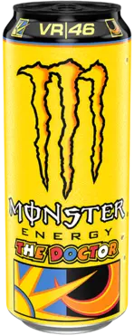
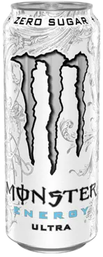
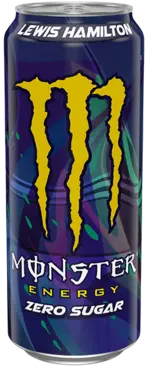

- The quickest Monster ever is "The Doctor". "The Doctor" will get you moving in a matter of seconds thanks to its full-bodied Monster Energy blend flavor and light, refreshing lemon taste!
220rsd
- We've received requests for a new Monster drink from people. With no added sugar and a hint of sweetness, this Monster flavor is intense. Naturally, Monster Energy Ultra is the new black. Let Ultra Beast loose!
180rsd
 Mango Loco is a delicious concoction of exotic juices that possesses the Monster magic and crazy good taste to keep the party going for days.
Mango Loco is a delicious concoction of exotic juices that possesses the Monster magic and crazy good taste to keep the party going for days.
280rsd
- Monster Power 160 mg of caffeine and a 500 ml carbonated energy drink, Lewis Hamilton LH44. Lewis Hamilton, the F1 World Champion, worked closely with our R&D team to create this combination, which is light, crisp, and refreshing. To ensure optimal refreshment, serve cold.
240rsd
 We've received requests for a new Monster drink from people. With no added sugar and a hint of sweetness, this Monster flavor is intense. Naturally, Monster Energy Ultra is the new black. Let Ultra Beast loose!
We've received requests for a new Monster drink from people. With no added sugar and a hint of sweetness, this Monster flavor is intense. Naturally, Monster Energy Ultra is the new black. Let Ultra Beast loose!
200rsd